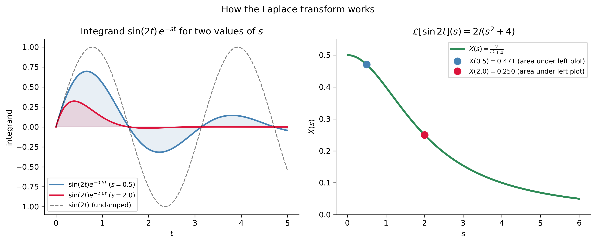

The Laplace Transform — Definition and Basic Properties
Show the code
import numpy as npimport sympy as symimport matplotlib as mplimport matplotlib.pyplot as pltfrom scipy.integrate import solve_ivp, quadfrom IPython.display import Math, displaympl.rcParams['figure.dpi'] =150mpl.rcParams['axes.spines.top'] =Falsempl.rcParams['axes.spines.right'] =False
Goals
Understand the big picture: what the Laplace transform does and why it is useful.
Learn the definition\(\mathcal{L}[x(t)](s) = \int_0^\infty x(t)e^{-st}\,dt\) and compute transforms directly from it.
Know the linearity of \(\mathcal{L}\) and use it to build up transforms from a table.
Understand the inverse transform\(\mathcal{L}^{-1}\) and use partial fractions.
Work with the Heaviside function to represent piecewise-defined forcing.
Apply the shift property and switching property as time-saving tools.
Use all of the above to solve constant-coefficient IVPs with discontinuous forcing.
Note
This material corresponds to Section 3.1 of Logan (2015).
The Big Picture
Before computing anything, it is worth pausing to appreciate what the Laplace transform accomplishes and why it is worth learning an entirely new technique.
The methods we have developed — undetermined coefficients and variation of parameters — break down when the forcing function \(f(t)\) is discontinuous (a switch being flipped, a pulse applied for a finite time, a sudden impact). These situations are not exotic mathematical curiosities; they are among the most common scenarios in electrical engineering, mechanical engineering, and control theory.
ImportantThe Core Strategy
\[\underbrace{ax''+bx'+cx = f(t)}_{\text{ODE (hard to solve)}} \xrightarrow{\;\mathcal{L}\;}
\underbrace{(as^2+bs+c)X(s) = F(s) + \text{ICs}}_{\text{algebraic equation (easy to solve)}}
\xrightarrow{\;\mathcal{L}^{-1}\;} \underbrace{x(t)}_{\text{solution}}\]
The Laplace transform converts differentiation into multiplication by \(s\). What was a differential equation becomes an algebraic equation for \(X(s)\). We solve algebraically, then invert.
Think of it as translating a hard problem in one language (differential equations) into an easier problem in another language (algebra), solving there, then translating back. The same philosophy underlies logarithms (which convert multiplication into addition), the Fourier transform (which converts convolution into multiplication), and many other transforms throughout mathematics.
Definition
ImportantDefinition: The Laplace Transform
Let \(x = x(t)\) be defined on \([0, \infty)\). The Laplace transform of \(x(t)\) is the function \(X(s)\) defined by \[
\mathcal{L}[x(t)](s) = X(s) = \int_0^\infty x(t)\,e^{-st}\,dt,
\] provided the improper integral converges. We also write \(\mathcal{L}[x] = X(s)\).
Unpacking the definition. The integrand \(x(t)e^{-st}\) is a function of both \(t\) and \(s\). We integrate over \(t\) from \(0\) to \(\infty\), which eliminates the \(t\) dependence and leaves a function of \(s\) alone. The factor \(e^{-st}\) is a damping kernel that forces the integrand to zero as \(t\to\infty\) (provided \(s\) is large enough), making the improper integral converge.
The variable \(s\) lives in the transform domain (sometimes called the frequency domain or the \(s\)-domain), while \(t\) lives in the time domain. We use uppercase letters for transform-domain functions: \(x(t) \leftrightarrow X(s)\).
For the upper limit to vanish we need \(a - s < 0\), i.e., \(s > a\). Evaluating explicitly: \[\frac{1}{a-s}e^{(a-s)t}\Bigg|_{t=0}^{t=\infty} = \frac{1}{a-s}\bigl[0 - 1\bigr] = \frac{-1}{a-s} = \frac{1}{s-a}.\]
\[\boxed{\mathcal{L}[e^{at}] = \frac{1}{s-a}, \quad s > a.}\]
Special case\(a=0\): \(\mathcal{L}[1] = \frac{1}{s}\), \(s > 0\).
Example 2 — \(\mathcal{L}[t]\)
Integration by parts with \(u = t\), \(dv = e^{-st}dt\):
The boundary term \(\bigl[te^{-st}/(-s)\bigr]_0^\infty = 0\): at \(t=0\) the term vanishes; as \(t\to\infty\), \(te^{-st}\to 0\) for \(s>0\) (by L’Hôpital’s rule, \(\lim_{t\to\infty} t/e^{st} = \lim_{t\to\infty} 1/(se^{st}) = 0\)).
\[\boxed{\mathcal{L}[t] = \frac{1}{s^2}, \quad s > 0.}\]
The pattern continues: \(\mathcal{L}[t^n] = n!/s^{n+1}\).
Example 3 — \(\mathcal{L}[\sin kt]\) and \(\mathcal{L}[\cos kt]\)
Using \(\sin kt = \frac{1}{2i}(e^{ikt}-e^{-ikt})\) and the formula for \(\mathcal{L}[e^{at}]\):
Compare \(\mathcal{L}[\sin kt] = k/(s^2+k^2)\) and \(\mathcal{L}[\cos kt] = s/(s^2+k^2)\). The numerator of the cosine transform involves \(s\) (the transform variable), while the sine transform has a constant numerator \(k\). This asymmetry reflects the fact that \(\cos(0)=1\) and \(\sin(0)=0\) — the cosine has a nonzero initial value.
Show the code
t_plot = np.linspace(0, 5, 400)fig, axes = plt.subplots(1, 2, figsize=(11, 4.5))# Left: damped integrand for two values of sx_func = np.sin(2*t_plot)for s_val, color, lbl in [(0.5, 'steelblue', '$s=0.5$'), (2.0, 'crimson', '$s=2.0$')]: damp = np.exp(-s_val*t_plot) integrand = x_func * damp axes[0].plot(t_plot, integrand, color=color, lw=2, label=f'$\\sin(2t)e^{{-{s_val}t}}$ ({lbl})') axes[0].fill_between(t_plot, 0, integrand, where=(integrand>0), alpha=0.12, color=color) axes[0].fill_between(t_plot, 0, integrand, where=(integrand<0), alpha=0.12, color=color)axes[0].plot(t_plot, x_func, 'k--', lw=1.2, alpha=0.5, label='$\\sin(2t)$ (undamped)')axes[0].axhline(0, color='k', lw=0.5)axes[0].set_xlabel('$t$'); axes[0].set_ylabel('integrand')axes[0].set_title(r'Integrand $\sin(2t)\,e^{-st}$ for two values of $s$')axes[0].legend(fontsize=8.5)# Right: X(s) = 2/(s^2+4)s_arr = np.linspace(0.01, 6, 400)X_s =2/(s_arr**2+4)axes[1].plot(s_arr, X_s, color='seagreen', lw=2.5, label=r'$X(s)=\frac{2}{s^2+4}$')for s_val, color in [(0.5, 'steelblue'), (2.0, 'crimson')]: val =2/(s_val**2+4) axes[1].plot(s_val, val, 'o', color=color, markersize=9, label=f'$X({s_val})={val:.3f}$ (area under left plot)')axes[1].set_xlabel('$s$'); axes[1].set_ylabel('$X(s)$')axes[1].set_title(r'$\mathcal{L}[\sin 2t](s) = 2/(s^2+4)$')axes[1].legend(fontsize=8.5); axes[1].set_ylim(0, 0.55)plt.suptitle('How the Laplace transform works', fontsize=12)plt.tight_layout()plt.show()

Figure 1: Geometric picture of the Laplace transform. The integrand \(x(t)e^{-st}\) is the original function multiplied by the exponential damping factor \(e^{-st}\) (gray dashed). The integral of the damped product (shaded area) gives the value of \(X(s)\) at that particular \(s\). Left: \(x(t)=\sin(2t)\) at two values of \(s\) — larger \(s\) damps the function more aggressively, reducing the area. Right: \(X(s) = 2/(s^2+4)\) as a function of \(s\), showing how the transform encodes the entire function in one curve.
Linearity
ImportantTheorem: Linearity
For any constants \(\alpha\), \(\beta\) and functions \(x(t)\), \(y(t)\): \[\mathcal{L}[\alpha x + \beta y] = \alpha\mathcal{L}[x] + \beta\mathcal{L}[y].\]
This follows immediately from the linearity of the integral and means we can build up transforms of complicated functions from the table, one term at a time.
Not every function has a Laplace transform. Two sufficient conditions guarantee existence:
Piecewise continuity (PWC): on any bounded subinterval \([0,b]\), \(x(t)\) has only finitely many jump discontinuities, and at each jump the one-sided limits exist (are finite).
Exponential order: there exist constants \(M > 0\) and \(r\) such that \(|x(t)| \leq Me^{rt}\) for all \(t > t_0\).
If both conditions hold, then \(X(s)\) exists for all \(s > r\).
Functions that fail: - \(x(t) = e^{t^2}\): grows faster than any exponential, so not of exponential order. - \(x(t) = 1/t\): not PWC on \([0,b]\) (blows up at \(t=0\)). - \(X(s) = (1/s)e^s\): grows without bound as \(s\to\infty\) (whereas every valid Laplace transform of a piecewise-continuous, exponentially-ordered function satisfies \(X(s)\to 0\) as \(s\to\infty\)), so \((1/s)e^s\) cannot correspond to any such function.
The Inverse Transform
Given \(X(s)\), we want the function \(x(t)\) whose transform is \(X(s)\). We write: \[x(t) = \mathcal{L}^{-1}[X(s)].\]
The inverse transform is also linear: \(\mathcal{L}^{-1}[\alpha X + \beta Y] = \alpha\mathcal{L}^{-1}[X] + \beta\mathcal{L}^{-1}[Y]\).
In practice, we find inverse transforms by: 1. Looking up the form in the table, OR 2. Using partial fractions to decompose \(X(s)\) into table-recognizable pieces.
Partial Fractions — The Key Algebraic Skill
Most \(X(s)\) arising from ODEs are rational functions. The partial fractions decomposition rewrites them as sums of simpler fractions, each of which appears in the table.
Type 1 — Distinct real poles. If \(X(s) = P(s)/[(s-a)(s-b)]\): \[X(s) = \frac{A}{s-a} + \frac{B}{s-b} \;\Longrightarrow\; x(t) = Ae^{at} + Be^{bt}.\]
Type 2 — Repeated real pole. If \(X(s) = P(s)/(s-a)^2\): \[X(s) = \frac{A}{s-a} + \frac{B}{(s-a)^2} \;\Longrightarrow\; x(t) = Ae^{at} + Bte^{at}.\]
Type 3 — Complex conjugate poles. If \(X(s) = P(s)/[(s-\alpha)^2+\beta^2]\):
Complete the square in the denominator, then match to \(\mathcal{L}[e^{\alpha t}\sin\beta t]\) and \(\mathcal{L}[e^{\alpha t}\cos\beta t]\).
Worked example. Find \(\mathcal{L}^{-1}\!\left[\dfrac{2s+3}{s^2+2s+5}\right]\).
Complete the square: \(s^2+2s+5 = (s+1)^2+4\). Write the numerator to match the shifted cosine and sine forms: \[\frac{2s+3}{(s+1)^2+4} = \frac{2(s+1)-2+3}{(s+1)^2+4} = \frac{2(s+1)}{(s+1)^2+4} + \frac{1}{(s+1)^2+4}.\]
The second fraction needs a factor of \(\beta = 2\) in the numerator: \(\dfrac{1}{(s+1)^2+4} = \dfrac{1}{2}\cdot\dfrac{2}{(s+1)^2+4}\).
Reading off from the table with \(\alpha=-1\), \(\beta=2\): \[x(t) = 2e^{-t}\cos(2t) + \tfrac{1}{2}e^{-t}\sin(2t).\]
Derivation (for \(x'\)): integrate by parts with \(u = e^{-st}\), \(dv = x'(t)dt\): \[\mathcal{L}[x'] = \int_0^\infty x'(t)e^{-st}dt = \left[x(t)e^{-st}\right]_0^\infty + s\int_0^\infty x(t)e^{-st}dt = -x(0) + sX(s).\]
TipWhy This Transforms an ODE Into Algebra
Applying \(\mathcal{L}\) to \(ax''+bx'+cx = f(t)\) and using linearity: \[a\mathcal{L}[x''] + b\mathcal{L}[x'] + c\mathcal{L}[x] = \mathcal{L}[f].\] Substituting the derivative formulas: \[\bigl(as^2+bs+c\bigr)X(s) = F(s) + a\bigl(sx(0)+x'(0)\bigr) + b\,x(0).\] The initial conditions are automatically incorporated — no separate step needed. Solving for \(X(s)\) is pure algebra.
Note
Connection to Notes 7. These derivative formulas are restated and proved formally as Theorem 3.11 in Notes 7 (equations (3.6) and (3.7) of Logan). Notes 7 also shows how the same formulas can be used in reverse — as a bootstrapping technique for finding transforms of new functions such as \(\mathcal{L}[t^n]\) and \(\mathcal{L}[\cosh t]\) without evaluating the defining integral.
Step 1. Apply \(\mathcal{L}\): \[[s^2X - 2s - 1] + 4[sX - 2] + 3X = 0\] Collecting the \(X\) terms on the left and moving IC terms to the right: \[(s^2+4s+3)X = 2s + 1 + 8 = 2s+9.\]
Step 2. Solve for \(X(s)\): \[X(s) = \frac{2s+9}{(s+1)(s+3)}.\]
Figure 2: Solution of \(x''+4x'+3x=0\), \(x(0)=2\), \(x'(0)=1\) via Laplace transform (solid blue) confirmed by solve_ivp (red dots). The overdamped solution decays monotonically to zero — both eigenvalues \(\lambda=-1,-3\) are negative real.
The Heaviside Function — Modeling Switches
Many real forcing functions are piecewise defined: a voltage switched on at \(t=3\), a force applied for exactly \(2\) seconds, a pump turned off at \(t=5\). The Heaviside function is the mathematical on/off switch:
\[H(t-a) = \begin{cases} 0, & t < a \\ 1, & t \geq a. \end{cases}\]
Its Laplace transform is: \[\mathcal{L}[H(t-a)] = \int_a^\infty e^{-st}\,dt = \frac{e^{-as}}{s}, \quad s > 0.\]
Building Piecewise Functions from Heaviside Steps
Any piecewise-constant function can be written as a sum of Heaviside steps. The key insight is that \(H(t-a) - H(t-b)\) equals \(1\) only on the interval \([a,b)\) and \(0\) elsewhere — it is a pulse.
Example (Logan §3.1, Example 3.8). The function \[f(t) = \begin{cases} 3, & 0 \leq t < 2 \\ 4, & 2 \leq t < 3 \\ 2, & 3 \leq t < 6 \\ 0, & t > 6 \end{cases}\] can be written as: \[f(t) = 3H(t) + 1\cdot H(t-2) - 2\cdot H(t-3) - 2\cdot H(t-6).\]
Each term “adjusts” the running value at the moment of the jump:
Term
What it does
At \(t=\)
\(3H(t)\)
Switches on value \(3\)
\(0\)
\(+1\cdot H(t-2)\)
Adds \(1\) (making value \(4\))
\(2\)
\(-2\cdot H(t-3)\)
Subtracts \(2\) (making value \(2\))
\(3\)
\(-2\cdot H(t-6)\)
Subtracts \(2\) (making value \(0\))
\(6\)
Tip
Think of this as a running adjustment: start at \(3\), add \(1\) at \(t=2\), subtract \(2\) at \(t=3\), subtract \(2\) at \(t=6\). Each Heaviside term corrects the running value by exactly the size of the jump at that moment. The coefficients are always the differences between adjacent constant values, not the values themselves.
Figure 3: Top: the piecewise function \(f(t)\) decomposed as a sum of Heaviside steps (each colored step is one term). Bottom: its Laplace transform \(F(s)\) as a function of \(s\), showing how the exponential factors \(e^{-as}\) create oscillatory decay.
Two Key Operational Properties
The Shift Property
ImportantShift Property
\[\mathcal{L}[f(t)e^{at}] = F(s-a),\] where \(F(s) = \mathcal{L}[f(t)]\).
Multiplying a time-domain function by \(e^{at}\)shifts its transform\(a\) units to the right in the \(s\)-domain.
This is proved directly from the definition: \(\int_0^\infty f(t)e^{at}e^{-st}dt = \int_0^\infty f(t)e^{-(s-a)t}dt = F(s-a)\).
Examples.
\(f(t)\)
\(F(s)\)
\(f(t)e^{at}\)
\(\mathcal{L}[f(t)e^{at}]\)
\(t\)
\(1/s^2\)
\(te^{-2t}\)
\(1/(s+2)^2\)
\(\sin 3t\)
\(3/(s^2+9)\)
\(e^{-t}\sin 3t\)
\(3/((s+1)^2+9)\)
\(\cos 3t\)
\(s/(s^2+9)\)
\(e^{2t}\cos 3t\)
\((s-2)/((s-2)^2+9)\)
\(t^2\)
\(2/s^3\)
\(t^2 e^{5t}\)
\(2/(s-5)^3\)
The shift property is essential for inverting transforms with completed-square denominators like \((s+1)^2+4\).
A factor of \(e^{-as}\) in the transform domain corresponds to a time delay of \(a\) in the time domain.
Intuition:\(H(t-a)f(t-a)\) is the function \(f(t)\) “switched on” at \(t=a\) (it is zero before \(a\) and equals \(f(t-a)\) after \(a\)). The factor \(e^{-as}\) encodes this delay.
Tip
How to apply the switching property in reverse. When inverting \(X(s)\), if you see an \(e^{-as}\) factor multiplying some \(F(s)\): 1. Strip the \(e^{-as}\) factor and identify \(F(s)\). 2. Invert\(F(s)\) alone to get \(f(t) = \mathcal{L}^{-1}[F(s)]\). 3. Replace\(t\) with \(t-a\) in \(f(t)\). 4. Multiply by \(H(t-a)\).
We know \(\mathcal{L}^{-1}[1/(s-2)] = e^{2t}\), so \(F(s) = 1/(s-2)\), \(f(t) = e^{2t}\). By the switching property: \[\mathcal{L}^{-1}\!\left[\frac{e^{-3s}}{s-2}\right] = H(t-3)\,e^{2(t-3)}.\] The exponential grows from \(t=3\) onward (not from \(t=0\)).
The true power of the Laplace transform appears when \(f(t)\) is discontinuous. Methods from Chapter 2 are helpless here; the Laplace transform handles it in stride.
Example. Solve the RC circuit equation \[x' + 2x = f(t), \quad x(0) = 0,\] where \(f(t) = 1\) for \(0 \leq t < 3\) and \(f(t) = 0\) for \(t \geq 3\) (voltage switched off at \(t = 3\)).
Figure 4: RC circuit \(x'+2x=f(t)\), \(x(0)=0\) with a voltage pulse \(f(t)=H(t)-H(t-3)\). The solution charges toward the steady state \(x=1/2\) while the forcing is on, then decays back to zero after the switch-off at \(t=3\). The solution \(x(t)\) is continuous even though the forcing is discontinuous — \(x(t)\) is an integral of a bounded forcing, so no jump can appear. However, \(x'(t)\) has a jump discontinuity at \(t=3\) (visible as a kink in the slope), since \(x' = f(t) - 2x(t)\) inherits the jump from \(f\).
Note
This example is a first taste of discontinuous forcing — the forcing is piecewise-constant and the ODE is first-order. Notes 7 takes up substantially harder cases: non-constant piecewise pieces (e.g., \(f(t)=t\) on one interval then \(f(t)=2\) on another), second-order oscillator equations, and RC circuits driven by square pulses. The Heaviside and switching tools developed here carry over directly; only the algebra becomes more involved.
The Short Table of Laplace Transforms
The following table (from Logan (2015), Table 3.1) collects the transforms needed throughout this chapter. The left column lists time-domain functions \(x(t)\) and the right column lists their transforms \(X(s) = \mathcal{L}[x]\).
Two Heaviside entries: which to use? The switching property \(H(t-a)f(t-a)\leftrightarrow e^{-as}F(s)\) is the standard form — use it whenever the function is already written in the shifted form \(f(t-a)\). The second entry \(f(t)H(t-a)\leftrightarrow e^{-as}\mathcal{L}[f(t+a)]\) arises when \(f(t)\) is not shifted (e.g., \(t^2 H(t-3)\) rather than \((t-3)^2 H(t-3)\)) — you must first evaluate \(\mathcal{L}[f(t+a)]\) and attach \(e^{-as}\). In most problems, rewriting \(f(t)\) in shifted form and using the standard entry is cleaner.
Show the code
# Verify a selection of table entries with SymPys_v = sym.Symbol('s', positive=True)t_v = sym.Symbol('t', positive=True)k_v = sym.Symbol('k', positive=True)a_v = sym.Symbol('a', positive=True)entries = [ (sym.sin(k_v*t_v), f'sin(kt)', k_v/(s_v**2+k_v**2)), (sym.cos(k_v*t_v), f'cos(kt)', s_v/(s_v**2+k_v**2)), (sym.exp(a_v*t_v)*sym.sin(k_v*t_v), 'e^{at}sin(kt)', k_v/((s_v-a_v)**2+k_v**2)), (t_v*sym.sin(k_v*t_v), 't*sin(kt)',2*k_v*s_v/(s_v**2+k_v**2)**2),]print("Spot-checking table entries via SymPy:")for f_t, name, F_expected in entries: F_computed = sym.laplace_transform(f_t, t_v, s_v, noconds=True) F_diff = sym.simplify(F_computed - F_expected) status ="✓"if F_diff ==0elsef"Diff={F_diff}"print(f" {name}: {status}")
The complete workflow for solving \(ax''+bx'+cx = f(t)\), \(x(0)=x_0\), \(x'(0)=x_1\) via Laplace transforms:
Note
Relationship to Notes 7. Notes 7 presents the same procedure as the Three-Step Method (following Logan’s Figure 3.2): transform → solve algebraically → invert. The five-item checklist below is the same algorithm with each stage broken into more explicit sub-steps. The two descriptions are complementary: the three-step framing names the logical stages; this checklist gives the implementation details within each stage.
ImportantThe Five Steps
Transform both sides: apply \(\mathcal{L}\) to the ODE. Use the derivative formula to handle \(\mathcal{L}[x'']\) and \(\mathcal{L}[x']\). Rewrite \(f(t)\) using Heaviside steps if piecewise.
Incorporate ICs: the derivative formula automatically brings in \(x(0)\) and \(x'(0)\).
Solve for \(X(s)\): this is pure algebra — no differential equations.
Partial fractions: decompose \(X(s)\) into standard forms from the table.
Invert: apply \(\mathcal{L}^{-1}\) term by term; use the switching property for any \(e^{-as}\) factors.
Step
What you do
Mathematics involved
1
\(\mathcal{L}[\text{ODE}]\)
Integral transforms, linearity
2
Plug in ICs
The formula \(\mathcal{L}[x''] = s^2X - sx_0 - x_1\)
3
Solve for \(X(s)\)
Algebra
4
Partial fractions
Algebra (factoring, cover-up rule)
5
\(\mathcal{L}^{-1}\), switching
Table lookup
TipCommon Traps
Time delays: every \(e^{-as}\) factor in \(X(s)\) signals a time delay. Strip it, invert the remaining \(F(s)\) to get \(f(t)\), then replace \(t\to t-a\) and multiply by \(H(t-a)\).
Complex poles: when the denominator has the form \((s-\alpha)^2+\beta^2\), complete the square first. Then split the numerator to match the \(e^{\alpha t}\cos\beta t\) and \(e^{\alpha t}\sin\beta t\) table entries (see the Type 3 example in the Partial Fractions section above).
Repeated poles: a factor \((s-a)^2\) in the denominator corresponds to \(Ae^{at}+Bte^{at}\) in the time domain, not just \(Ae^{at}\). Use both the \(1/(s-a)\) and \(1/(s-a)^2\) terms in the partial fractions decomposition.
The transforms and properties developed here are the foundation, but the real payoff comes in §3.2 and beyond. The convolution theorem (\(\mathcal{L}[f*g] = F(s)G(s)\), already in the table) will allow us to express solutions as integrals — a powerful tool for systems with arbitrary forcing. The Dirac delta\(\delta_a(t)\) (also in the table, with \(\mathcal{L}[\delta_a] = e^{-as}\)) models instantaneous impulses — hammer blows, lightning strikes, and analogous events in circuits — that no classical function can describe. These two tools complete the Laplace transform toolkit.
Note
Next: Applying Laplace Transforms to Differential Equations — Logan §3.2.
Relevant Videos
What is a Laplace Transform?:
Intro to Laplace Transforms:
Properties of Laplace Transforms:
References
Logan, J David. 2015. A First Course in Differential Equations, Third Edition.
TipSession Info
Show the code
import sysprint("Python:", sys.version)print('\n'.join(f'{m.__name__}=={m.__version__}'for m inglobals().values() ifgetattr(m,'__version__',None)))